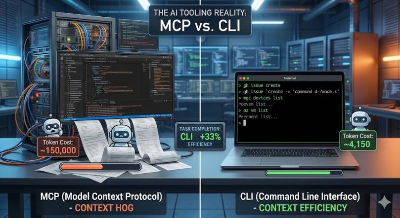

Let’s be honest: MCP (Model Context Protocol) was supposed to be the universal connector between AI models and the real world. A clean, structured protocol that lets your AI agent talk to any tool through a standardized interface. Sounds great in theory. In practice? I’m increasingly reaching for good old CLI tools instead — and I’m not alone.
After months of building AI agent solutions and working with both approaches in real-world enterprise scenarios, here’s my take: CLI tools are the better choice in many cases, and the reason is surprisingly simple — context efficiency.

The Problem with MCP Nobody Talks About
MCP works. I’m not saying it doesn’t. But here’s the thing that hit me after integrating multiple MCP servers into agent workflows: MCP is a context hog.
A typical MCP server doesn’t just expose the tools you need. It dumps an entire schema into your agent’s context window — tool definitions, parameter descriptions, authentication flows, state management, the whole package.
Let me show you what I mean. Here’s what happens when you connect a popular GitHub MCP server:
That’s one tool definition. The full GitHub MCP server ships with 93 tools. Total context cost? Around 55,000 tokens — before you’ve even asked a single question. That’s roughly half of GPT-4o’s context window or a significant chunk of Claude’s budget gone just for the plumbing.
Now stack multiple MCP servers. A typical enterprise agent might need GitHub, a database connector, Microsoft Graph, and maybe Jira. You’re easily looking at 150,000+ tokens of tool definitions alone.
Compare that to CLI:
The model already knows gh. Zero schema tokens consumed. The entire interaction — command plus output — might cost you 200 tokens.
The Token Math That Changed My Mind
I ran a side-by-side comparison on a real task: “List all non-compliant Intune devices and export their details to a CSV.”
MCP approach (Microsoft Graph MCP Server):
| Phase | Token Cost |
|---|---|
| Tool schema injection | ~28,000 tokens |
| Agent reasoning + tool selection | ~3,200 tokens |
| MCP call: list devices with filter | ~1,800 tokens |
| MCP response parsing | ~4,500 tokens |
| MCP call: get device details (per device) | ~2,100 tokens × N |
| Total for 50 devices | ~145,000 tokens |
CLI approach:
| Phase | Token Cost |
|---|---|
| Tool schema injection | 0 tokens |
| Agent reasoning + command composition | ~800 tokens |
| Shell command execution | ~150 tokens |
| Output parsing | ~3,200 tokens |
| Total for 50 devices | ~4,150 tokens |
That’s not a marginal difference. That’s a 35x reduction in token usage. And tokens aren’t just a cost metric — they’re directly tied to how much reasoning capacity your agent has left for the actual problem.
Real-World Example: Intune Compliance Automation
Let me walk you through both approaches for a task I actually built for a customer.
The goal: Build an agent that checks device compliance across an Intune tenant, identifies policy violations, cross-references with Entra ID group memberships, and generates a remediation report.
The MCP Approach
I set up three MCP servers: Microsoft Graph (for Intune and Entra ID), a custom compliance rules engine, and a reporting tool.
The agent worked, but it was noticeably slower. Multi-step reasoning broke down after 3-4 tool calls because the accumulated context from MCP responses pushed the agent into the tail end of its context window where attention quality drops. I had to split the workflow into multiple agent sessions to get reliable results.
The CLI Approach
Same task. I gave the agent a shell with mgc (Microsoft Graph CLI), az CLI, and three focused PowerShell scripts.
The agent had 95% of its context window available for reasoning. It composed the entire pipeline in one shot, handled edge cases proactively, and completed the task in a single session. No splitting needed.
Why AI Models Are Native CLI Speakers
There’s a deeper reason why CLI works so well with AI agents, and it goes beyond token efficiency.
AI models have been trained on billions of lines of terminal interactions — Stack Overflow answers, GitHub repos, documentation, tutorials. When you ask Claude or GPT to use git, docker, az, kubectl, or gh, you’re tapping into deeply learned patterns. The model doesn’t need a schema to know that git log --oneline -10 shows the last 10 commits.
MCP servers, on the other hand, are custom schemas that the model sees for the first time at runtime. Even with good descriptions, the model has to reason about unfamiliar tool interfaces on the fly. That’s additional cognitive load that directly competes with the actual task.
Here’s a quick comparison of how an agent interacts with both:
The CLI version is self-documenting. The MCP version requires the model to map its intent to an unfamiliar abstraction layer.
CLI Composability: The Unix Philosophy Meets AI
One of the most powerful advantages of CLI tools is composability — and AI agents are surprisingly good at it.
Try building this cross-tool workflow with MCP. You’d need both servers loaded, the agent would have to orchestrate multiple structured calls, manage intermediate state, and deal with different response formats. With CLI, the agent just pipes text through familiar tools.
Benchmarks Back This Up
This isn’t just my experience. Recent benchmarks from the community confirm the pattern. One detailed comparison ran identical browser automation tasks through both MCP and CLI interfaces. The results: CLI achieved a 28% higher task completion score with roughly the same total token count — meaning the tokens were spent more effectively on actual problem-solving rather than protocol overhead.
The Token Efficiency Score (TES) told the story: CLI scored 202 vs. MCP’s 152, a 33% efficiency advantage. And CLI completed tasks that MCP structurally couldn’t handle, like memory profiling, because it had full access to selective queries and targeted output rather than dumping entire data structures.
When MCP Still Makes Sense
I’m not saying MCP is dead. There are legitimate use cases where it’s the right choice:
Structured production environments where you need strict input validation, OAuth-based authentication flows, and audit trails. MCP’s schema enforcement prevents agents from running malformed commands.
Multi-tenant SaaS platforms where tools need fine-grained permission scoping. MCP’s capability negotiation protocol handles this elegantly.
Non-CLI tools and services that don’t have a command-line interface. If you’re integrating with Figma, Notion, or a custom internal API, MCP is often the only practical option. But you can also build your own CLI for it.
Discovery-heavy scenarios where agents need to dynamically find available tools. MCP’s tools/list endpoint gives agents a structured way to discover capabilities. CLI requires the agent to already know what tools exist.
The sweet spot? Use CLI as your default, fall back to MCP when you need its specific guarantees.
Practical Guidelines for Building CLI-First Agents
If you want to adopt this approach, here are the patterns that work well:
1. Provide a focused tool manifest instead of MCP schemas. Instead of loading full MCP tool definitions, give your agent a lightweight markdown file:
That’s ~100 tokens instead of 50,000+.
2. Build thin wrapper scripts for complex multi-step operations.
The agent calls one script instead of reasoning through five MCP tool calls.
3. Use structured output flags. Most modern CLIs support --output json or --format json. This gives agents clean, parseable data without the overhead of an MCP response wrapper.
4. Leverage --help as dynamic documentation. If the agent isn’t sure about a command, it can call mgc devices list --help for just-in-time documentation. This is more token-efficient than pre-loading the entire schema — the agent only pays the token cost when it actually needs the information.
Key Takeaways
Start with CLI. Before reaching for MCP, ask yourself: does a CLI tool already exist for this? If yes, use it. Your agent will perform better with the extra context headroom.
Measure your context budget. Track how many tokens your tool integrations consume. You might be shocked at how much overhead MCP adds — and how directly that impacts agent reasoning quality.
Design for composability. Build small, focused CLI tools that do one thing well. Let the AI agent compose them. This is the Unix philosophy — and it turns out, AI agents love it.
Reserve MCP for what it’s good at. Production security, multi-tenant access control, tool discovery in large organizations. Don’t use it just because it’s the new shiny thing.
The future of AI agent tooling isn’t about the most sophisticated protocol. It’s about the leanest path between the model and the action. And right now, that path runs through the terminal.